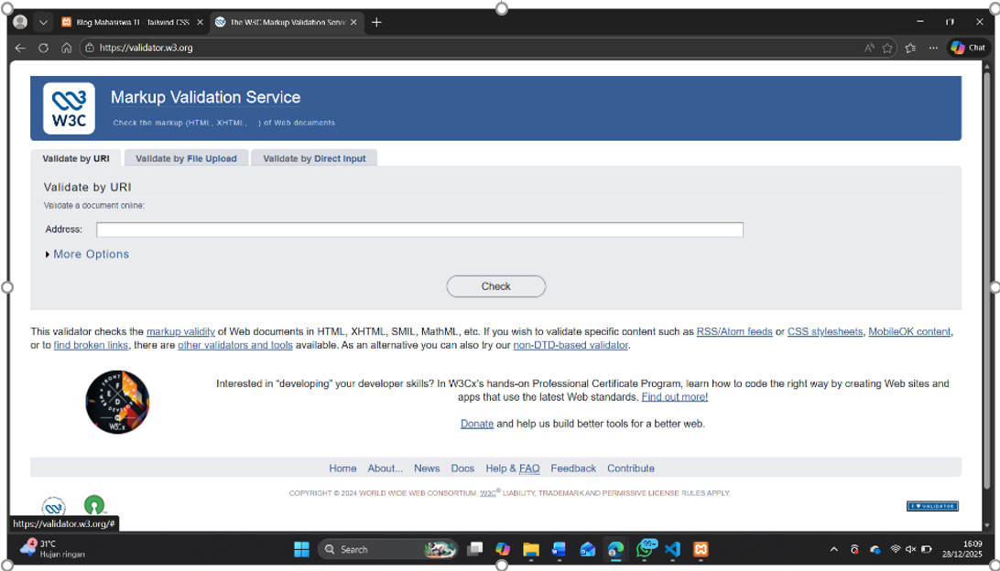
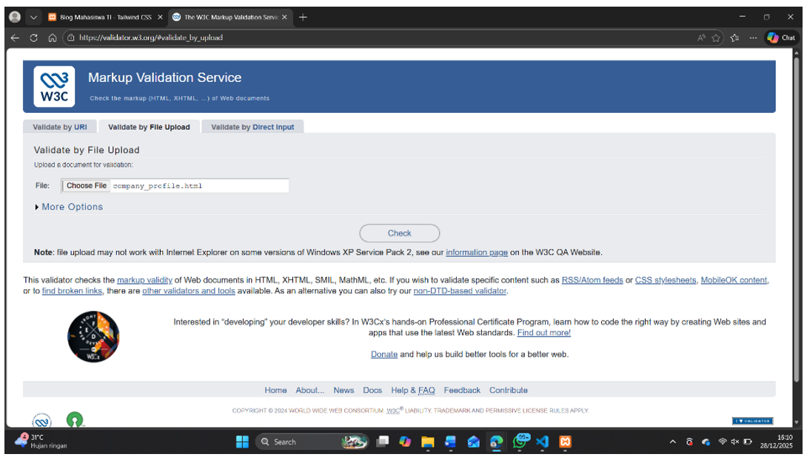
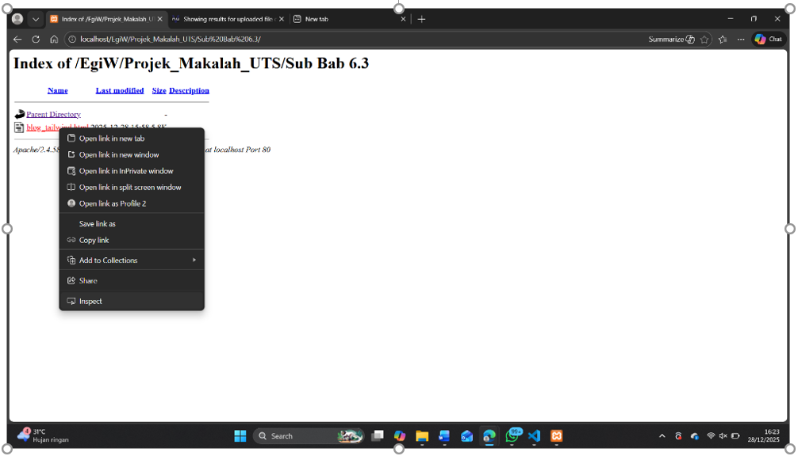
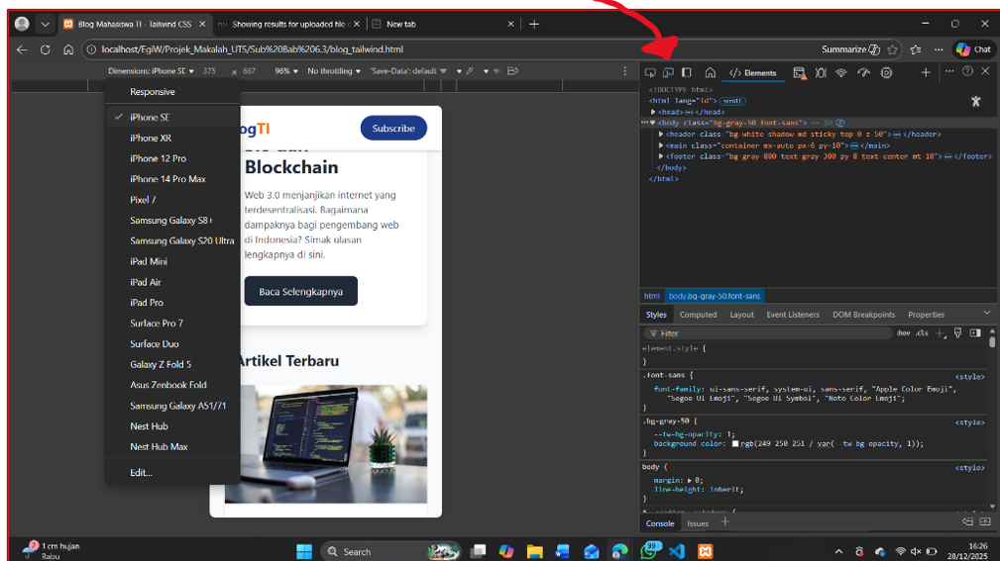
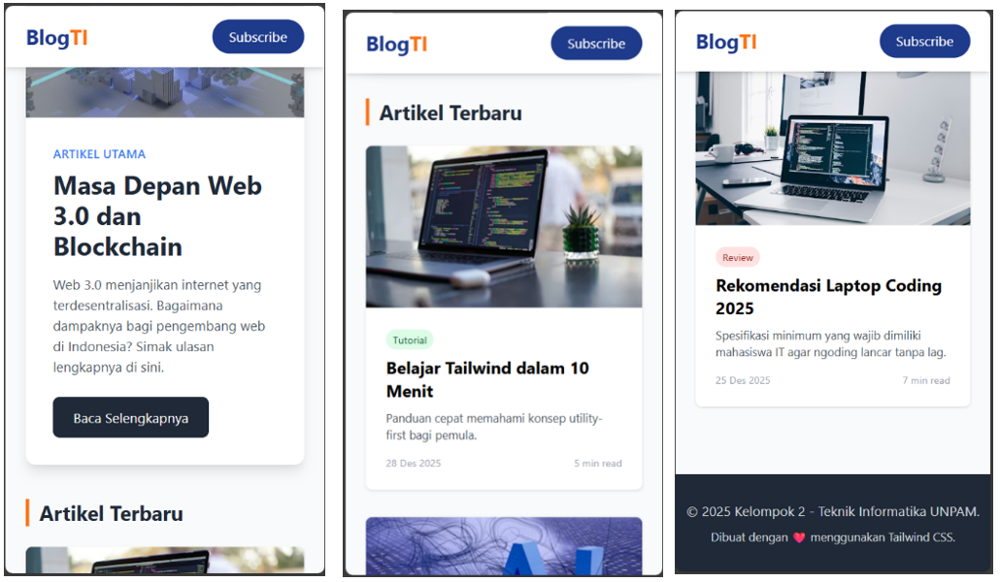
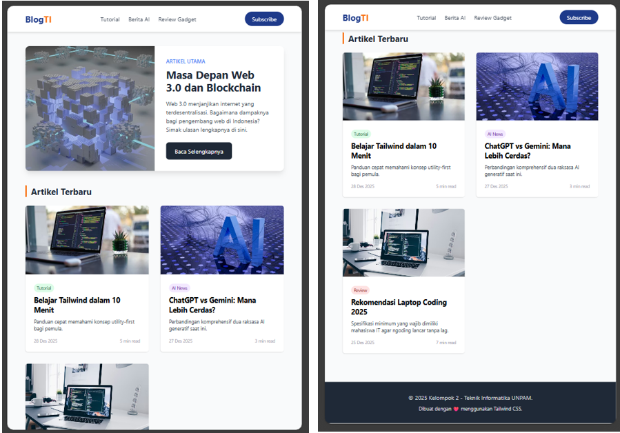

6.4 Mini Project 4: Testing dan Debugging Website
Tahap pengujian sangat penting untuk memastikan website valid dan sesuai standar industri sebelum dipublikasikan (hosting).
1. Validasi Kode HTML (W3C Validator)
Mahasiswa diarahkan menggunakan situs validator.w3.org untuk mengecek kesalahan sintaks seperti tag yang lupa ditutup atau atribut alt pada gambar yang kosong. Kode yang valid menjamin tampilan konsisten di semua browser.
Langkah-langkah Validasi:
- Buka situs validator.w3.org. 
- Pilih tab “Validate by File Upload” jika file ada di komputer, atau “Validate by Direct Input” jika ingin copy-paste kode.
-
Masukkan file
company_profile.htmlatau file proyek lain yang telah dibuat, lalu klik Check.  - Analisis Error: Jika validator menemukan error (misalnya warna merah), baca pesan kesalahannya. Perbaiki segera di kode editor Anda. Kode yang valid (biasanya berwarna hijau) memastikan tampilan konsisten.
2. Pengujian Responsif (Chrome DevTools)
Jangan hanya menguji website dengan mengubah ukuran jendela browser secara manual (resize window). Gunakan alat profesional Chrome DevTools untuk simulasi perangkat nyata.
Langkah-langkah Pengujian:
- Buka website proyek di Google Chrome.
- Tekan F12 atau klik kanan pada halaman -> pilih Inspect. 
-
Klik ikon Device Toggle Toolbar (ikon HP/Tablet) di pojok kiri atas panel DevTools (atau tekan
Ctrl+Shift+M).  -
Pilih berbagai preset perangkat pada menu dropdown bagian atas:
- iPhone SE / Mobile Small: Untuk layar sangat kecil. 
- iPad Air / Tablet: Untuk layar menengah. 
Checklist Pengujian:
- ✅ Apakah menu navigasi berubah menjadi hamburger icon di mode mobile?
- ✅ Apakah teks pada hero section terbaca jelas dan tidak terpotong?
- ✅ Apakah kartu grid (Grid Card) turun ke bawah (stacking) menjadi 1 kolom pada mode mobile?